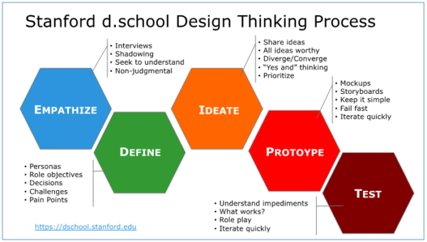

Wij hebben tijdens dit project bij Flynth gewerkt volgens het Design Thinking Process. Dit hoofdstuk beschrijft hoe
wij hier invulling aan hebben gegeven.

Empathize
De eerste twee weken bij Flynth hebben wij met name vooronderzoek gedaan naar de theorie van Data Warehouses en
Dashboarding. Dit begon als een zelfstandige klus maar vervolgens hebben wij gezamenlijk vragen opgesteld over
bepaalde theoretische onduidelijkheden voor onze opdrachtgever Auke. Vervolgens hebben wij samen met Auke het Data
Warehouse van Flynth doorgenomen. Om alvast te oefenen met PowerBI hebben wij met een betrekkelijk weinig
databasetabellen een eigen Dashboard in PowerBi gemaakt om zo alvast wat handigheid te krijgen. Ook hebben wij samen
met Auke en een medewerker van Finance en Control de huidige opzet van de Toegevoegde waarde-rapportage besproken en
de opdracht gedefinieerd; het maken van een Toegevoegde Waarde-Dashboard.
Define
Toen wij wisten hoe de huidige Toegevoegde Waarde in elkaar steekt was het moment aangebroken om erachter te komen
wat de probleemstelling was. Zo hebben wij vestigingsdirecteuren gesproken om te vragen wat er momenteel aan de
Toegevoegde Waarde rapportage ontbreekt en wat zij terug willen zien in een Toegevoegde Waarde-Dashboard. In deze
fase hebben wij ook kennis gemaakt met alle tabellen.
Ideate en prototype
Deze twee fases hebben wij samengevoegd. Aan de hand van prototyping hebben wij namelijk onze ideeën getoond. Om
verschillende ideeën op te doen hebben wij als eerste ieder individueel een opzet gemaakt van een Toegevoegde
Waarde-dashboard. Vervolgens hebben wij deze samen besproken met Auke en uit alle drie de Dashboards de beste
componenten samengevoegd. Vanaf dat moment zijn wij het iteratieve proces ingegaan. Wekelijks bespraken wij de
huidige stand van zaken met Auke. Ook Pieter was hier vaak bij aanwezig. Eventuele vragen en aanpassingen aan de
data kaarten wij aan bij Auke zodat hij deze op kon lossen. Vervolgens gaf Auke feedback op ons en lichtte hij toe
wat we voor de volgende keer de prioriteit was om af te hebben. Tijdens deze fase hebben wij ook interviews gehad
met Finance & Control en de vestigingsdirecteuren om de huidige stand van zaken te laten zien en aanvullende
vragen
op hun wensen te stellen.
Test
Toen het Dashboard af was hebben wij wederom met Finance & Control en vestigingsdirecteuren een afspraak gehad.
Hierin hebben wij laten zien wat het eindresultaat is van het Toegevoegde Waarde-Dashboard. De feedback die wij op
het eindresultaat hebben gekregen hebben wij verwerkt.